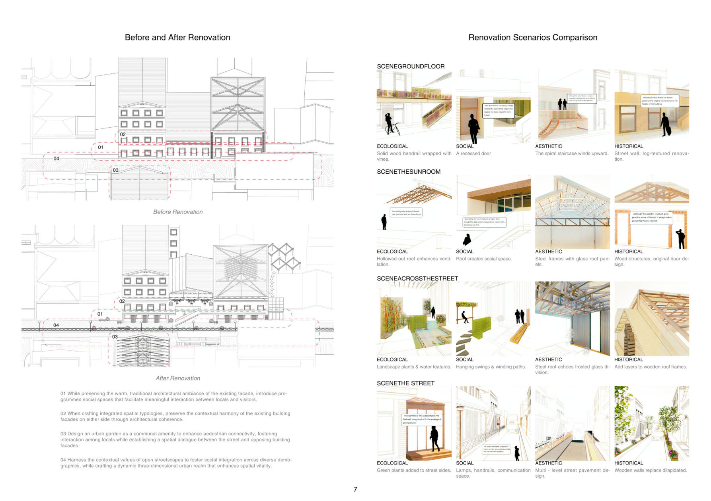
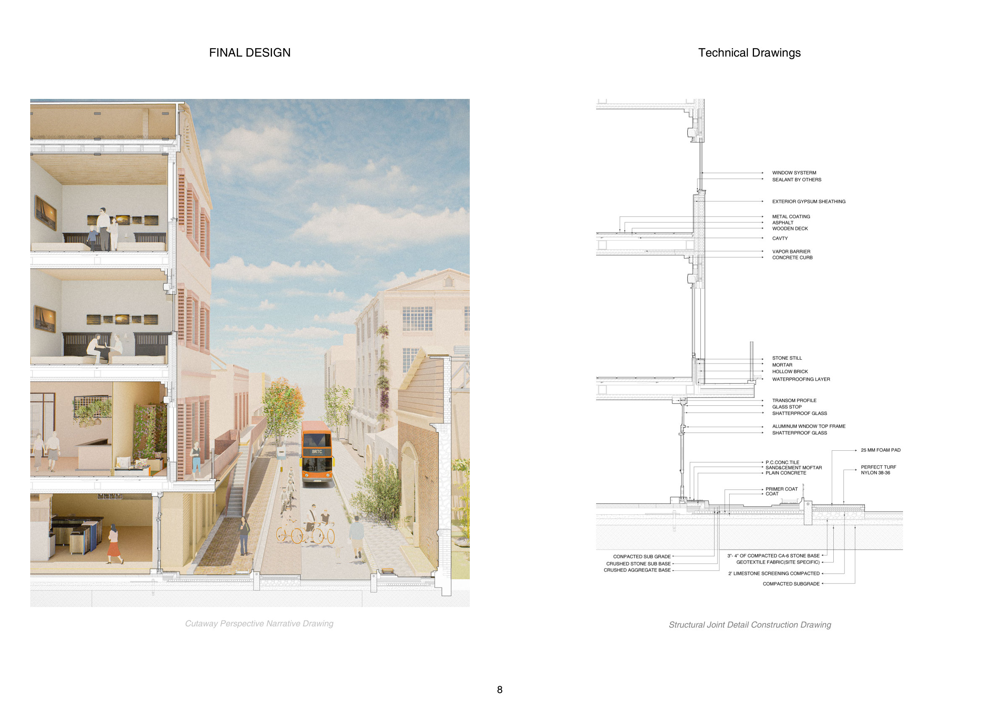
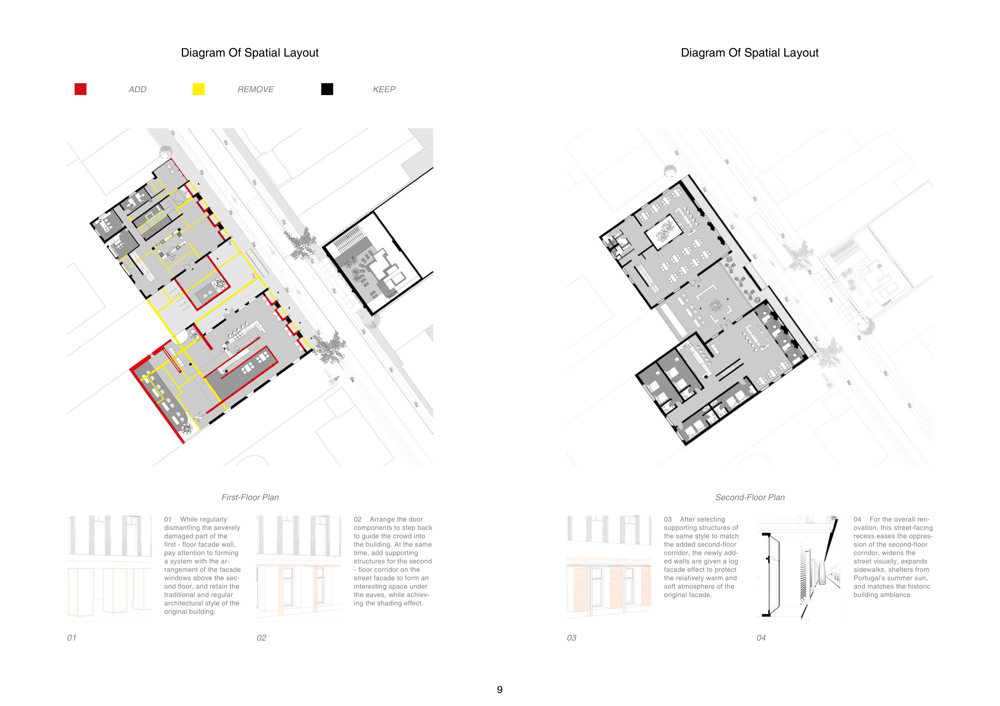

"Adaptive Architecture Reconnecting Streets, Blending Journeys"
Faro's once lively old fishing harbour — the communal heart where salt breezes mingled with fig scents and neighbours gathered — has grown sterile as the waterfront hardens. This renovation listens to three voices: locals craving preserved communal warmth, tourists seeking authentic connection, and intermediaries wanting spaces that balance utility and charm.
Rooted in a value-attribute logic chain and supported by social media research, the design extracts each group's tendencies toward the four values of history, aesthetics, ecology and social interaction. Comparative scenario assessments screen out conflicting demands, while integrated design reserves consensus value points — turning multi-group needs into a renovated space that reconnects streets and blends journeys.


